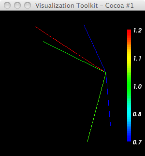

from vtk import *
import os,string,sys,math
try:
VTK_DATA = os.environ['VTK_DATA']
except KeyError:
VTK_DATA = '../../../vtkdata/'
argc = len(sys.argv)
print 'argc=',argc
if argc < 2:
print 'Usage: ',sys.argv[0],' <ntps>'
raise ValueError, 'Too few input args'
idx=1
npts = string.atoi(sys.argv[idx])
idx=idx+1
print 'npts = ',npts
vmath = vtkMath()
#vmath.RandomSeed(1234)
# I can't stand the default red->blue; make a blue->red LUT
lutBlueRed = vtkLookupTable()
lutBlueRed.SetHueRange(0.667,0.0)
lutBlueRed.Build()
pts = vtkPoints()
lines = vtkCellArray()
center = (0,0,0)
pts.InsertPoint(0,0,0,0)
scalars = vtkFloatArray()
scalars.SetNumberOfValues(npts)
scalars.SetName("fpp_dist")
R = 1
dmin=1.e10
dmax= -dmin
for i in range(1,npts+1):
x = vmath.Random(-R,R)
y = vmath.Random(-R,R)
# z = vmath.Random(-R,R)
z = 0
print i,') x,y,z=',x,y,z
dist = math.sqrt(x*x + y*y +z*z)
if dist < dmin: dmin=dist
if dist > dmax: dmax=dist
scalars.SetValue(i-1,dist)
pts.InsertPoint(i,x,y,z)
lines.InsertNextCell( 2 )
lines.InsertCellPoint(0)
lines.InsertCellPoint(i)
cellPD = vtkPolyData()
cellPD.SetPoints(pts)
#cellPD.SetVerts(verts)
cellPD.SetLines(lines)
cellPD.Update()
cellPD.GetCellData().SetScalars(scalars)
mapper = vtkDataSetMapper()
mapper.SetInput(cellPD)
mapper.SetScalarModeToUseCellFieldData()
mapper.SelectColorArray("fpp_dist")
print 'dmin,dmax=',dmin,dmax
mapper.SetScalarRange(dmin,dmax)
mapper.SetLookupTable(lutBlueRed)
mapper.Update()
bds = cellPD.GetBounds()
print 'bds = ',bds
cellsActor = vtkActor()
cellsActor.SetMapper(mapper)
# Create rendering stuff
ren1 = vtkRenderer()
renWin = vtkRenderWindow()
renWin.AddRenderer(ren1)
iren = vtkRenderWindowInteractor()
iren.SetRenderWindow(renWin)
#------------------------
scalarBar = vtkScalarBarActor()
scalarBar.SetLookupTable(lutBlueRed)
#scalarBar.SetTitle("Stress")
scalarBar.GetPositionCoordinate().SetCoordinateSystemToNormalizedViewport()
#scalarBar.GetPositionCoordinate().SetValue(0.8,0.05)
scalarBar.SetOrientationToVertical()
scalarBar.SetWidth(0.1)
scalarBar.SetHeight(0.9)
scalarBar.SetPosition(0.88,0.1)
#scalarBar.SetLabelFormat("%-#6.3f")
scalarBar.SetLabelFormat("%-#3.1f")
scalarBar.GetLabelTextProperty().SetColor(1,1,1)
#scalarBar.GetTitleTextProperty().SetColor(1,0,0)
ren1.AddActor2D(scalarBar)
#------------------------
ren1.AddActor(cellsActor)
#ren.SetBackground(1,1,1)
renWin.SetSize(300,300)
#ren.GetActiveCamera().Zoom(1.4)
renWin.Render()
#renWin.SetFileName("sphere2Pts.ppm")
#renWin.SaveImageAsPPM()
iren.Start()
# Running this produces:
% python cell-colors.py 5
argc= 2
npts = 5
1 ) x,y,z= -0.981576726763 0.639953289013 0
2 ) x,y,z= -0.305071552892 0.6624105478 0
3 ) x,y,z= -0.865923131754 0.429924616325 0
4 ) x,y,z= -0.2569734311 -0.952456491977 0
5 ) x,y,z= 0.0637393393851 -0.732922955292 0
dmin,dmax= 0.729284845736 1.17176494343
bds = (-0.98157674074172974, 0.063739337027072906, -0.95245647430419922, 0.66241055727005005, 0.0, 0.0)
